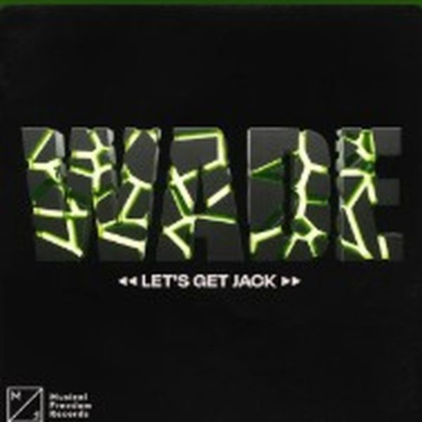

I 18 dischi

1 Lets Get JackWade 2
I Love This GameAlex Guesta
2
I Love This GameAlex Guesta
 3
Let It GoNOTSOBAD, MA_RK
3
Let It GoNOTSOBAD, MA_RK
 4
Beast Mode (Knock You Out)Don Diablo
4
Beast Mode (Knock You Out)Don Diablo
 5
A.F.R.OEnzo Siffredi Feat. BAQABO
5
A.F.R.OEnzo Siffredi Feat. BAQABO
 6
So Crazy AgainLeandro Da Silva
6
So Crazy AgainLeandro Da Silva
 7
EAT THE BASSJohn Summit
7
EAT THE BASSJohn Summit
 8
Where Do I GoDJ ANTOINE, ALOE BLACC, INFINITY
8
Where Do I GoDJ ANTOINE, ALOE BLACC, INFINITY
 9
TekaDJ Snake & Peso Pluma
9
TekaDJ Snake & Peso Pluma
 10
In The StreetsMartin Ikin
10
In The StreetsMartin Ikin
 11
CalabriaDJ Kuba & Neitan x Fafaq
11
CalabriaDJ Kuba & Neitan x Fafaq
 12
One More TimeChampagne Kenny x Loz Seka
12
One More TimeChampagne Kenny x Loz Seka
 13
12 Hour TripNicola Fasano, Valentino Favetta
13
12 Hour TripNicola Fasano, Valentino Favetta
 14
The UndergroundSam Collins, Jake Tarry
14
The UndergroundSam Collins, Jake Tarry
 15
RaidedTigerblind
15
RaidedTigerblind
 16
TakataFrancesco V
16
TakataFrancesco V
 17
Music In MeMOKABY x Mark Bale
17
Music In MeMOKABY x Mark Bale
 18
PATT (Party All The Time)Sharam
18
PATT (Party All The Time)Sharam
La tracklist
- 1 Lets Get Jack Wade Musical Freedom
- 2 I Love This Game Alex Guesta Under Town Records
- 3 Let It Go NOTSOBAD, MA_RK Selected
- 4 Beast Mode (Knock You Out) Don Diablo Hexagon
- 5 A.F.R.O Enzo Siffredi Feat. BAQABO Wired
- 6 So Crazy Again Leandro Da Silva Black Lizard Records
- 7 EAT THE BASS John Summit Experts Only/Darkroom Records
- 8 Where Do I Go DJ ANTOINE, ALOE BLACC, INFINITY Time Records
- 9 Teka DJ Snake & Peso Pluma 2024 Double P Records
- 10 In The Streets Martin Ikin STEREOHYPE
- 11 Calabria DJ Kuba & Neitan x Fafaq Future House Music
- 12 One More Time Champagne Kenny x Loz Seka Uprise Music
- 13 12 Hour Trip Nicola Fasano, Valentino Favetta Smilax Records
- 14 The Underground Sam Collins, Jake Tarry Hexagon
- 15 Raided Tigerblind Tomorrowland Music
- 16 Takata Francesco V Black Lizard Records
- 17 Music In Me MOKABY x Mark Bale Hexagon
- 18 PATT (Party All The Time) Sharam Armada Music